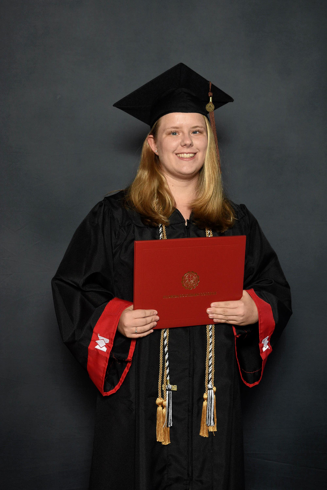

About
My passion for graphic design and content creation began in high school and has evolved into a career focused on blending creativity with effective communication. I hold a Bachelor of Fine Arts in Graphic Design with a minor in Communications from Florida Southern College, and I am currently pursuing a Master of Arts in Mass Communication with a concentration in Social Media at the University of Florida. My expertise spans both traditional and digital art, web design, and multimedia communication, with a strong emphasis on branding, digital content creation, and social media strategy.
In my current role, I develop engaging and audience-focused content that enhances brand visibility and drives client engagement across various print and digital mediums. I am proficient in Adobe Creative Suite, Canva, and other digital tools that help translate ideas into visually compelling designs. I thrive on collaboration, working closely with cross-functional teams to ensure content aligns with organizational goals and resonates with target audiences.
With a strong foundation in SEO, CMS platforms (like SquareSpace and WordPress), and analytics tools, I am constantly refining my approach to create high-impact content that builds lasting relationships and achieves results. I’m always seeking opportunities to grow my skillset and contribute to impactful projects that drive real, tangible outcomes.